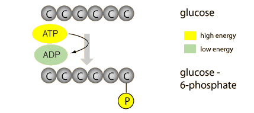
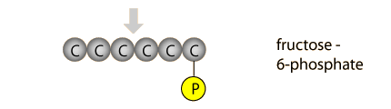
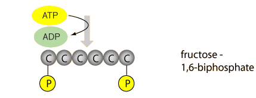
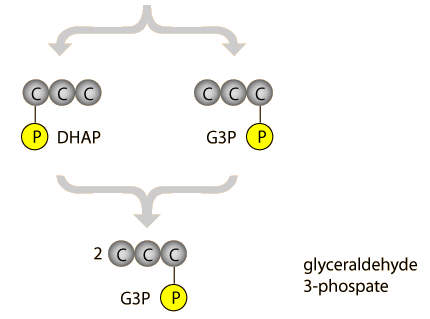
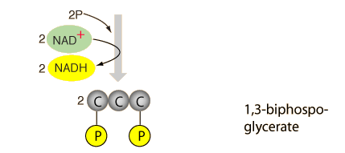
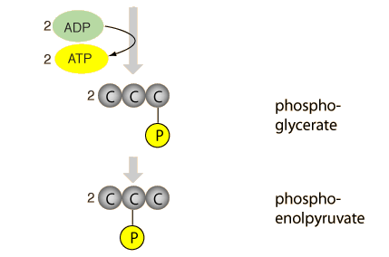
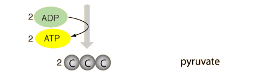

Glycolysis
Glycolysis, part of cellular respiration, is a series of reactions that constitute the first phase of most carbohydrate catabolism, catabolism meaning the breaking down of larger molecules into smaller ones. The word glycolysis is derived from two Greek words and means the breakdown of something sweet. Glycolysis breaks down glucose and forms pyruvate with the production of two molecules of ATP. The pyruvate end product of glycolysis can be used in either anaerobic respiration if no oxygen is available or in aerobic respiration via the TCA cycle which yields much more usable energy for the cell.
The following general outline of glycolysis follows the organization of Audesirk & Audesirk.
A glucose molecule is energized by the addition of a high-energy phosphate from ATP, forming glucose-6-phosphate. |  |
A rearrangement of the molecule forms fructose-6-phosphate. |  |
Using the available energy of a second ATP molecule, a second phosphate is added to the fructose. |  |
The fructose-1,6-biphosphate is split into two three-carbon molecules, each having one phosphate group attached. The dihydrooxacetone (DHAP) quickly rearranges to form another G3P molecule, so the net result is two G3P molecules. |  |
In near-simultaneous reactions, each G3P molecule gains an inorganic phosphorous while contributing two electrons and a hydrogen ion to NAD+ to form the energized carrier molecules NADH. The resulting molecules have two high-energy phosphates. |  |
Two molecules of low energy ADP are elevated to ATP molecules by phosphates from the biphosphoglycerates. This recovers the energy invested in the first step of the glycolysis. The remaining phosphorous is relocated to the center position. |  |
The final phosphate is transferred to ADP to form ATP, and this step represents the net yield of 2 ATP for the glycolysis process as a whole. |  |
|
Index
Reference
Enger & Ross
Ch 6
Audesirk & Audesirk
Ch 8 |